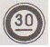
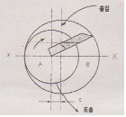
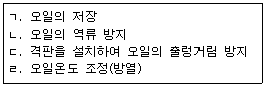
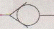
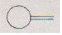
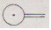
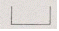
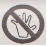

지게차운전기능사 (2010-10-03 기출문제)
1. 실린더 벽이 마멸되었을 때 발생 되는 현상은?
- 기관의 회전수가 증가한다.
- 오일 소모량이 증가한다.
- 열효율이 증가한다.
- 폭발압력이 증가한다.
(정답률: 84%)

2. 디젤엔진의 연료탱크에서 분사노즐까지 연료의 순환 순서로 맞는 것은?
- 연료탱크→연료공급펌프→분사펌프→연료필터→분사노즐
- 연료탱크→연료필터→분사펌프→연료공급펌프→분사노즐
- 연료탱크→연료공급펌프→연료필터→분사펌프→분사노즐
- 연료탱크→분사펌프→연료필터→연료공급펌프→분사노즐
(정답률: 77%)
3. 터보차저의 특징을 설명한 것으로 가장 거리가 먼 것은?(오류 신고가 접수된 문제입니다. 반드시 정답과 해설을 확인하시기 바랍니다.)
- 기관이 고출력일 때 배기가스의 온도를 낮출 수 있다
- 고지대 작업 시에도 엔진의 출렬 저하를 방지한다.
- 구조가 복잡하고 무게가 무거우면 설치가 복잡하다.
- 과급 작용의 저하를 막기 위해 터빈실과 과급실에 각각 물재킷을 두고 있다.
(정답률: 46%)
4. 라디에이터 캡의 스프링이 파손 되었을 때 가장 먼저 나타나는 현상은?
- 냉각수 비등점이 낮아진다.
- 냉각수 순환이 불량해진다.
- 냉각수 순환이 빨라진다.
- 냉각수 비등점이 높아진다.
(정답률: 48%)
5. 디젤기관에서 조속기가 하는 역할은?
- 분사시기 조정
- 분사량 조정
- 분사압력 조정
- 착화성 조정
(정답률: 62%)
6. 일반적으로 디젤기관에서 흡입공기 압축 시 압축온도는 약 얼마인가?
- 200~300℃
- 500~550℃
- 1100~1150℃
- 1500~1600℃
(정답률: 69%)
7. 디젤기관에서 연료장치의 구성 부품이 아닌 것은?
- 분사펌프
- 연료필터
- 기화기
- 연료탱크
(정답률: 82%)
8. 엔진오일 교환 후 압력이 높아졌다면 그 원인으로 가장 적절한 것은?
- 엔진오일 교환시 냉각수가 혼입되었다.
- 오일의 점도가 낮은 것으로 교환하였다.
- 오일회로 내 누설이 발생하였다.
- 오일 점도가 높은 것으로 교환하였다.
(정답률: 74%)
9. 동절기에 기관이 동파 되는 원인으로 맞는 것은?
- 냉각수가 얼어서
- 기동전동기가 얼어서
- 발전장치가 얼어서
- 엔진오일이 얼어서
(정답률: 72%)
10. 오일의 여과 방식이 아닌 것은?
- 자력식
- 분류식
- 전류식
- 샨트식
(정답률: 50%)
11. 동력을 전달하는 계통의 순서를 바르게 나타낸 것은?
- 피스톤 → 커넥팅로드→ 클러치 → 크랭크축
- 피스톤 → 클러치 → 크랭크축 → 커넥팅로드
- 피스톤 → 크랭크축→ 커넥팅로드 → 클러치
- 피스톤 → 커넥팅로드→ 크랭크축 → 클러치
(정답률: 56%)
12. 엔진 시동 전에 해야 할 가장 중요한 일반적인 점검 사항은?
- 실린더의 오염도
- 충전장치
- 유압계의 지침
- 엔진 오일량과 냉각수량
(정답률: 73%)
13. 납산 축전지의 용량은 어떻게 결정되는가?
- 극판의 크기, 극판의 수, 황산의 양에 의해 결정된다.
- 극판의 크기, 극판의 수, 단자의 수에 따라 결정된다.
- 극판의 수, 셀의 수, 발전기의 충전능력에 따라 결정된다.
- 극판의 수와 발전기의 충전능력에 따라 결정된다.
(정답률: 57%)
14. 교류발전기에서 교류를 직류로 바꾸어 주는 것은?
- 계자
- 슬립링
- 브러시
- 다이오드
(정답률: 74%)
15. 조명에 관련된 용어의 설명으로 틀린 것은?
- 조도의 단위는 루멘이다.
- 피조면의 밝기는 조도로 나타낸다.
- 광도의 단위는 cd이다.
- 빛의 밝기를 광도라 한다.
(정답률: 57%)
16. 납산축전지에 증류수를 자주 보충시켜야 한다면 그 원인에 해당 될 수 있는 것은?
- 충전 부족이다.
- 극판이 황산화 되었다.
- 과충전 되고 있다.
- 과방전 되고 있다
(정답률: 44%)
17. 엔진 정지 상태에서 계기판 전류계의 지침이 정상에서 (-)방향을 지시하고 있다. 그 원인이 아닌 것은?
- 전조등 스위치가 점등위치에서 방전되고 있다.
- 배선에서 누전되고 있다.
- 시동시 엔진 예열장치를 동작시키고 있다.
- 발전기에서 축전지로 충전되고 있다.
(정답률: 55%)
18. 기동전동기는 회전되나 엔진은 크랭킹이 되지 않는 원인으로 옳은 것은?
- 축전지 방전
- 기동전동기의 전기자 코일 단선
- 플라이휠 링기어의 소손
- 발전기 브러시 장력 과다
(정답률: 56%)
19. 공기 브레이크에서 브레이크슈를 직접 작동시키는 것은?
- 릴레이 밸브
- 브레이크 페달
- 캠
- 유압
(정답률: 42%)
20. 유압식 모터 그레이더에서 유압 모터가 설치되는 것은?
- 리닝장치
- 서클 횡송장치
- 블레이드 승강장치
- 블레이드 회전장치
(정답률: 52%)
21. 무한궤도식 건설기계에서 주행 구동체인 장력 조정 방법은?
- 구동스프로킷을 전?후진시켜 조정한다.
- 아이들러를 전?후진시켜 조정한다.
- 슬라이드 슈의 위치를 변화시켜 조정한다.
- 드레그 링크를 전?후진시켜 조정한다.
(정답률: 53%)
22. 무한 궤도식 굴삭기에서 하부 주행체 동력전달 순서로 맞는 것은?
- 유압펌프→제어밸브→센트조인트→주행모터
- 유압펌프→제어밸브→주행모터→자재이음
- 유압펌프→센트조인트→주행모터→제어밸브
- 유압펌프→센트조인트→주행모터→자재이음
(정답률: 52%)
23. 기중기의 붐을 교환할 때 가장 좋은 방법은?
- 트레일러를 이용한다.
- 굴삭기를 이용한다.
- 기중기를 이용한다.
- 붐 교환대를 이용한다.
(정답률: 36%)
24. 유성기어 장치의 주요 부품으로 맞는 것은?
- 유성기어, 베벨기어, 선기어
- 선기어, 클러치기어, 헬리컬기어
- 유성기어, 베벨기어, 클러치기어
- 선기어, 유성기어, 링기어, 유성캐리어
(정답률: 48%)
25. 지게차에서 리프트 실린더의 주된 역할은?
- 마스터를 틸트시킨다.
- 마스터를 이동시킨다.
- 포크를 상승, 하강시킨다.
- 포크를 앞뒤로 기울게 한다.
(정답률: 84%)
26. 클러치 스프링의 장력이 약하면 일어날 수 있는 현상으로 가장 적합한 것은?
- 유격이 커진다.
- 클러치판이 변형된다.
- 클러치가 파손된다.
- 클러치가 미끄러진다.
(정답률: 64%)
27. 건설기계 등록자가 다른 시?도로 변경되었을 경우 해야 할 사항은?
- 등록사항 변경 신고를 하여야 한다.
- 등록이전 신고를 하여야 한다.
- 등록증을 당해 등록처에 제출한다.
- 등록증과 검사증을 등록처에 제출한다.
(정답률: 56%)
28. 다음 중 피견인 차의 설명으로 가장 옳은 것은?
- 자동차로 볼 수 없다.
- 자동차의 일부로 본다.
- 화물자동차이다.
- 소형자동차이다.
(정답률: 63%)
29. 건설기계의 등록원부는 등록을 말소한 후 얼마의 기한 동안 보존하여야 하는가?
- 5년
- 10년
- 15년
- 20년
(정답률: 54%)
30. 고속도로를 운행 중 일 때 안전운전상 준수사항으로 가장 적합한 것은?
- 정기점검을 실시 후 운행하여야 한다.
- 연료량을 점검하여야 한다.
- 월간 정비점검을 하여야 한다.
- 모든 승차자는 좌석 안전띠를 매도록 하여야 한다.
(정답률: 83%)
31. 정기검사 신청을 받은 검사대행자는 며칠 이내 검사일시 및 장소를 통지하여야 하는가?
- 20일
- 15일
- 5일
- 3일
(정답률: 39%)
32. 건설기계의 조종 중 고의 또는 과실로 가스공급시설을 손괴할 경우 조종사면허의 처분기준은?
- 면혀효력정지 10일
- 면혀효력정지 15일
- 면혀효력정지 180일
- 면혀효력정지 25일
(정답률: 58%)
33. 대형건설기계에 적용해야 될 내용으로 맞지 않는 것은?
- 당해 건설기계의 식별이 쉽도록 전후 범퍼에 특별도색을 하여야 한다.
- 최고속도가 35km/h 이상인 경우에는 부착하지 않아도 된다.
- 운전석 내부의 보기 쉬운 곳에 경고 표지판을 부착하여야 한다.
- 총중량 30톤, 축중 10톤 미만인 건설기계는 특별표지판 부착대상이 아니다.
(정답률: 53%)
34. 다음 교통안전표지에 대한 설명으로 맞는 것은?

- 최고 중량 제한표지
- 최고 시속 30km 제한 표지
- 최저 시속 30km 제한 표지
- 차간거리 최저 30m 제한 표지
(정답률: 70%)
35. 다음 중 긴급자동차가 아닌 것은?
- 소방자동차
- 구급자동차
- 그 밖에 대통령령이 정하는 자동차
- 긴급배달 우편물 운송차 뒤를 따라 가는 자동차
(정답률: 89%)
36. 교차로에서의 좌회전 방법으로 가장 적절한 것은?
- 운전자 편한대로 운전한다.
- 교차로 중심 바깥쪽으로 서행한다.
- 교차로 중심 안쪽으로 서행한다.
- 앞차의 주행방향으로 따라가면 된다.
(정답률: 71%)
37. 밀폐된 액체의 일부에 힘을 가했을 때 맞는 것은?
- 모든 부분에 같게 작용한다.
- 모든 부분에 다르게 작용한다.
- 홈 부분에만 세게 작용한다.
- 돌출부에는 세게 작용한다.
(정답률: 71%)
38. 그림과 같이 안쪽 날개가 편심 된 회전축에 끼워져 회전하는 유압펌프는?

- 베인펌프
- 피스톤 펌프
- 트로코이드 펌프
- 사판 펌프
(정답률: 60%)
39. 두 개 이상의 분기회로에서 실린더나 모터의 작동순서를 결정하는 자동제어 밸브는?
- 리듀싱밸브
- 릴리프밸브
- 시퀀스밸브
- 파일럿 첵밸브
(정답률: 70%)
40. 유압 컨트롤 밸브 내에 스풀 형식의 밸브 기능은?
- 오일의 흐름 방향을 바꾸기 위해
- 계통 내의 압력을 상승시키기 위해
- 축압기의 압력을 바꾸기 위해
- 펌프의 회전 방향을 바꾸기 위해
(정답률: 53%)
41. 보기에서 유압 작동유 탱크의 기능으로 모두 맞는 것은?

- ㄱ, ㄴ, ㄷ
- ㄴ, ㄷ, ㄹ
- ㄱ, ㄷ, ㄹ
- ㄱ, ㄴ, ㄹ
(정답률: 43%)
42. 축압기의 용도로 적합하지 않는 것은?
- 유압 에너지의 저장
- 충격 흡수
- 유량분배 및 제어
- 압력 보상
(정답률: 41%)
43. 유압오일에서 온도에 따른 점도변화 정도를 표시하는 것은?
- 점도
- 점도 분포
- 점도 지수
- 윤활성
(정답률: 75%)
44. 작업 중에 유압펌프 유량이 필요하지 않게 되었을 때 오일을 저압으로 탱크에 귀환시키는 회로는?
- 시퀀스 회로
- 어큐뮬레이션회로
- 블리드오프회로
- 언로드회로
(정답률: 48%)
45. 유압 모터와 연결된 감속기의 기어오일 수준 점검 시 유의사항으로 틀린 것은?
- 오일 수준을 점검하기 전에 항상 오일 수준 점검 게이지 주변을 깨끗하게 청소한다.
- 오일 수준 점검 시는 오일의 정상적인 작업 온도에서 점검해야 한다.
- 오일량이 너무 적으면 모터 유닛(unit)이 올바르게 작동하지 않거나 손상될 수 있으므로 오일량 수준은 정량 유지가 필요하다.
- 오일량은 냉간 상태에서 가득 채우는 수준이다.
(정답률: 79%)
46. 그림에서 체크 밸브를 나타낸 것은?




(정답률: 77%)
47. 안전관리의 가장 중요한 업무는?
- 사고책임자의 직무조사
- 사고원인 제공자 파악
- 사고발생 가능성의 제거
- 물품손상의 손해사정
(정답률: 85%)
48. 안전?보건표지의 종류와 형태에서 그림의 안전표지판이 나타내는 것은?

- 보행금지
- 작업금지
- 출입금지
- 사용금지
(정답률: 71%)
49. 안전관리상 수공구와 관련한 내용으로 가장 적합하지 않은 것은?
- 공구를 사용한 후 녹슬지 않도록 반드시 오일을 바른다.
- 작업에 적합한 수공구를 이용한다.
- 공구는 목적 이외의 용도로 사용하지 않는다.
- 사용 전에 이상 유무를 반드시 확인한다.
(정답률: 88%)
50. 아세틸렌 용접장치를 사용하여 용접 또는 절단할 때에는 아세틸렌 발생기로부터 ( )이내, 발생기실로부터 ( )이내의 장소에서는 흡연 등의 불꽃이 발생하는 행위를 금지하여야 한다. ( )안에 차례로 들어갈 거리는?
- 3m, 1m
- 5m, 3m
- 8m, 4m
- 10m, 5m
(정답률: 57%)
51. 무거운 짐을 이동할 때 적당하지 않은 것은?
- 힘겨우면 기계를 이용한다.
- 기름이 붙은 장갑을 끼고 한다.
- 지렛대를 이용한다.
- 2인 이상이 작업할 때는 힘센 사람과 약한 사람과의 균형을 잡는다.
(정답률: 88%)
52. 방화 대책의 구비사항으로 가장 거리가 먼 것은?
- 소화기구
- 스위치 표시
- 방화벽, 스프링클러
- 방화사
(정답률: 78%)
53. ILO(국제노동기구)의 구분에 의한 근로 불능 상해의 종류 중 응급조치 상해는?
- 1일 미만의 치료를 받고 다음부터 정상작업에 임할 수 있는 정도의 상해
- 2~3일의 치료를 받고 다음부터 정상작업에 임할 수 있는 정도의 상해
- 1주 미만의 치료를 받고 다음부터 정상작업에 임할 수 있는 정도의 상해
- 2주 미만의 치료를 받고 다음부터 정상작업에 임할 수 있는 정도의 상해
(정답률: 52%)
54. 동력 전동장치에서 가장 재해가 많이 발생할 수 있는 것은?
- 기어
- 커플링
- 벨트
- 차축
(정답률: 80%)
55. 스패너 작업 방법으로 옳은 것은?
- 몸 쪽으로 당길 때 힘이 걸리도록 한다.
- 볼트 머리보다 큰 스패너를 사용하도록 한다.
- 스패너 자루에 조합렌치를 연결해서 사용하여도 된다.
- 스패너 자루에 파이프를 끼워서 사용한다.
(정답률: 73%)
56. 다음 중 금속나트륨이나 금속칼륨 화재의 소화재로서 가장 적합한 것은?
- 물
- 건조사
- 분말 소화기
- 할론 소화기
(정답률: 40%)
57. 감전사고의 요인을 열거한 것으로 가장 거리가 먼 것은?
- 충전부에 직접 접촉될 경우나 안전거리 이내로 접근하였을 때
- 전기 기계?기구의 절연변화, 손상, 파손 등에 의한 표면누설로 인하여 누전되어 있는 것에 접촉하여 인체가 통로로 되었을 경우
- 콘덴서나 고압케이블 등의 잔류전하에 의할 경우
- 송전선로의 철탑을 손으로 만졌을 경우
(정답률: 52%)
58. 지하 전력케이블이 지상 전주로 입상 또는 지상 전력선이 지하 전력케이블로 입하하는 전주 주변에서의 건설기계장비로 작업할 때 가장 올바른 설명은?
- 지하 전력케이블이 지상전주로 입상하는 전주는 전력선이 케이블로 되어있어 건설기계장비가가 접촉해도 무관하다.
- 지상 전주의 전력선이 지하 전력케이블로 입하하는 전주는 전력선이 케이블로 되어있어 건설기계장비가 접촉해도 무관하다.
- 전력케이블이 입상 또는 입하하는 전주에는 건설기계장비가 절대 접촉 또는 근접하지 않도록 한다.
- 전력케이블이 입상 또는 입하하는 전주의 전력선은 모두 케이블로 되어있어 건설기계장비가 근접하는 것은 가능하나, 접촉되지 않으면 된다.
(정답률: 77%)
59. 가스도매사업자의 배관을 시가지의 도로 노면 밑에 매설하는 경우 노면으로부터 배관 외면까지의 깊이는?
- 1.5m 이상
- 1.2m 이상
- 1.0m 이상
- 0.6m 이상
(정답률: 35%)
60. 도시가스배관 주위를 굴착 후 되메우기시 지하에 매몰하면 안 되는 것은?
- 보호포
- 보호판
- 라인마크
- 전기방식용 양극
(정답률: 48%)